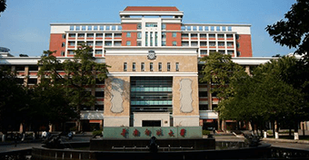
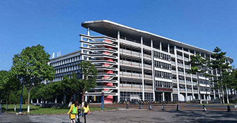

考证费用
拿证时间
院校专业
报考流程
华南师范大学专业选择
低学历快速升本科入口
初高中学历升专科入口
考试通过再交费班型
主考专业：
行政管理
简单好考、取证快
名校学历，不考英语数学
工作稳定，就业机会多
可从事人力、行政、文秘、职能等高级白领岗位
适合国企、私企、政府机关以及公务员

主考专业：
工商管理
考试科目少，取证快
名校学历，不考英语数学
含金量高，社会认可度高，就业面广，薪酬高
适合就职于营销、管理、运营等现代企业的核心部门，涉及 营销策划、财务管理、商务谈判、企业高管、市场营销，产 品调研等

主考专业：
英语
科目少、取证快
英语作为一种交流工具
显然比其他专业具有更广泛的实用性，我国仍然缺乏高端英
语专业人才。就业面广，薪资高
适合外企、私企，政府部门担任文秘、翻译、业务或管理
以及银行、保险、海关、边防、高等院校及科研部门工作
更多主考专业
管理类、金融类、教育类
理工类、机械类、艺术类
计算机、其它专业
1.您目前的最高学历是？
小学
初中
高中
中专
高专
本科
2.您的年龄？
18~30岁
30~40岁
40岁以上
3.您的意向学习方式？
晚上学习
周末学习
全日制
4.您的学历基础？
数学好
英语好
都不好
5.您的户籍所在地？
深圳户籍
广州户籍
外地户籍
免费获取测评结果
学费
需要多少钱？
查看
答案
成人学历
申请条件
是什么？
查看
答案
如何拿证
比较简单省事？
查看
答案
低基础
如何升本科？
查看
答案
没专科
可以
直接考本科学历吗?
查看
答案
大概多久
能拿到证书？
查看
答案
上班族
如何
安排时间拿学历？
查看
答案
我能
报名什么
专业？
查看
答案
报名流程
是什么？
手续
有哪些？
查看
答案
含金量
高不高？
对工作有帮助吗？
查看
答案
免费咨询更多问题
在这里城市,我们
怀揣梦想
，却因为
学历低
而被拒之门外，不是
本科
总有些遗憾，甚至因此吃过苦头，我们想凭能力找一份
好工作
，但招聘官收到简历太多，而只留下
“本科”的人
，然而这就是现实。
为了让人人学的起本科，过去十多年我们成功将学费降到几千元，帮助众多学员学完本科。今天我们仍不满足，再次推出
“青学教育助学计划”
，每位报名学员提交资料申请，即可获得
免费入学资格
，祝您实现人生梦想，拥有美好未来。
立即申请助学金
点我问问题